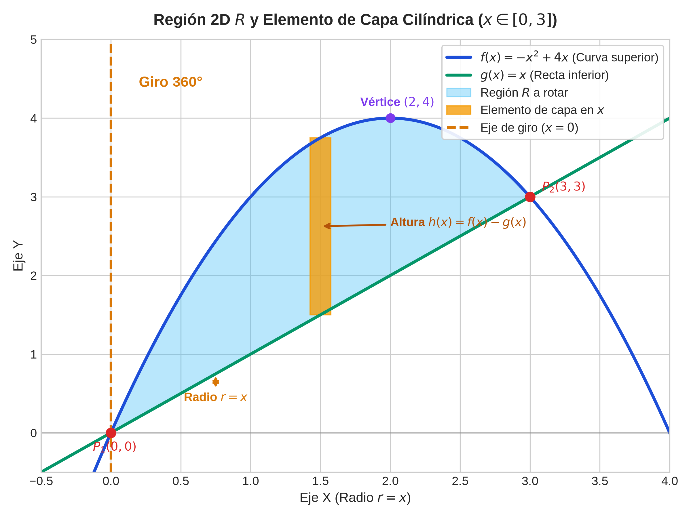
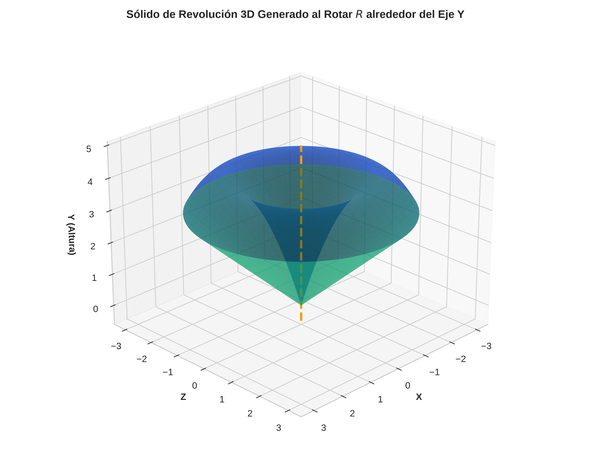
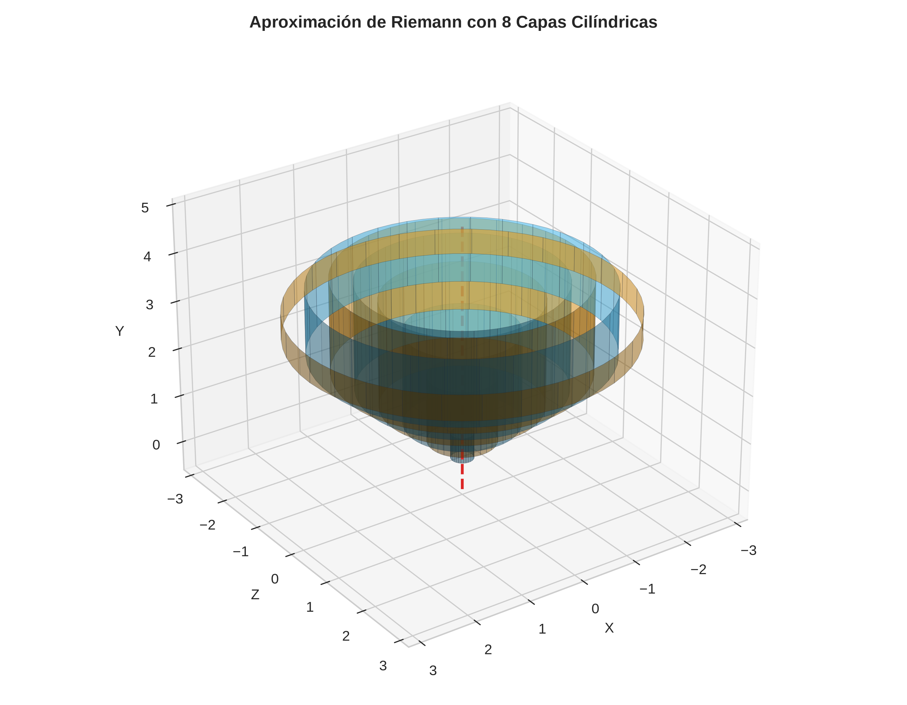
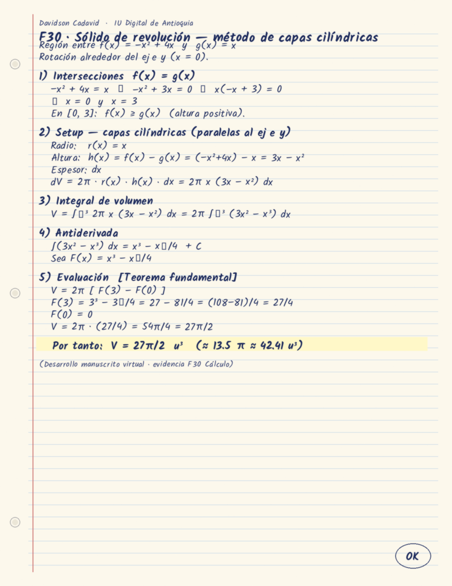

Estudiante: Davidson Arley Cadavid Alvarez · Cuenta IU: davidson.cadavid@est.iudigital.edu.co
Funciones: f(x)=−x²+4x · g(x)=x · [0,3] · eje y · capas cilíndricas · V=27π/2
https://notebook.google.com/notebook/957bafb9-a437-4590-b53c-57b48a893c9f
Conversación pública Gemini: https://share.gemini.google/WPM4OuwKXNdE
Prompt: Actúa como un profesor de cálculo integral. Necesito plantear una región en el plano 2D delimitada por dos funciones continuas f(x) (curva superior no lineal) y g(x) (recta inferior) en el primer cuadrante (x ≥ 0), que se intersecten en dos puntos exactos x=a y x=b, para calcular el volumen del sólido de revolución generado al rotar dicha región alrededor del eje y (x = 0) mediante el método de capas cilíndricas con una sola integral. Proporciona las ecuaciones, los puntos de corte analíticos, la altura h(x)=f(x)-g(x) y el radio r(x) de cada capa cilíndrica. Funciones: f(x)=-x²+4x ; g(x)=x ; P1(0,0) P2(3,3) ; [0,3]
Gráfica región/ecuaciones (origen: Matplotlib — no captura nativa GeoGebra):

En el video: r(x)=x · h(x)=3x−x² · interacción con ángulo/capas.

Visualización capas (origen Matplotlib/3D — no GeoGebra nativo):

r(x)=x · h(x)=3x−x² · V=2π∫₀³(3x²−x³)dx = 27π/2 ≈ 42.4115 u³ Transferencia (eje x=-1): cambia el radio a r(x)=x+1; altura y límites se mantienen.
Manuscrito virtual (desarrollo capas, V=27π/2):

También: 04_manuscrito_virtual.pdf
Verificación IA (cuaderno): notebook — planteamiento coherente con capas; valor 27π/2 coincide con F(x)=x³−x⁴/4 en [0,3].